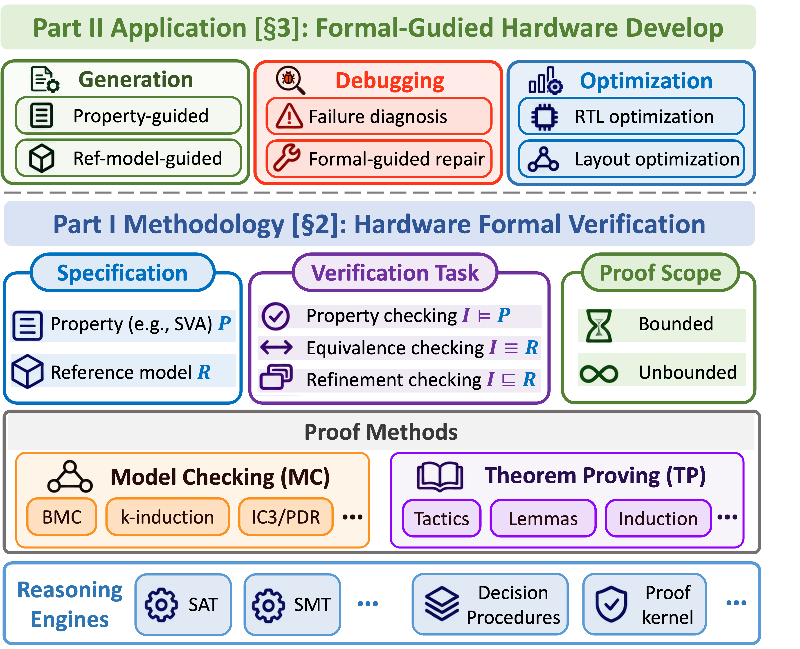
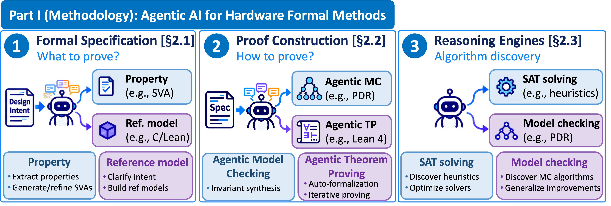
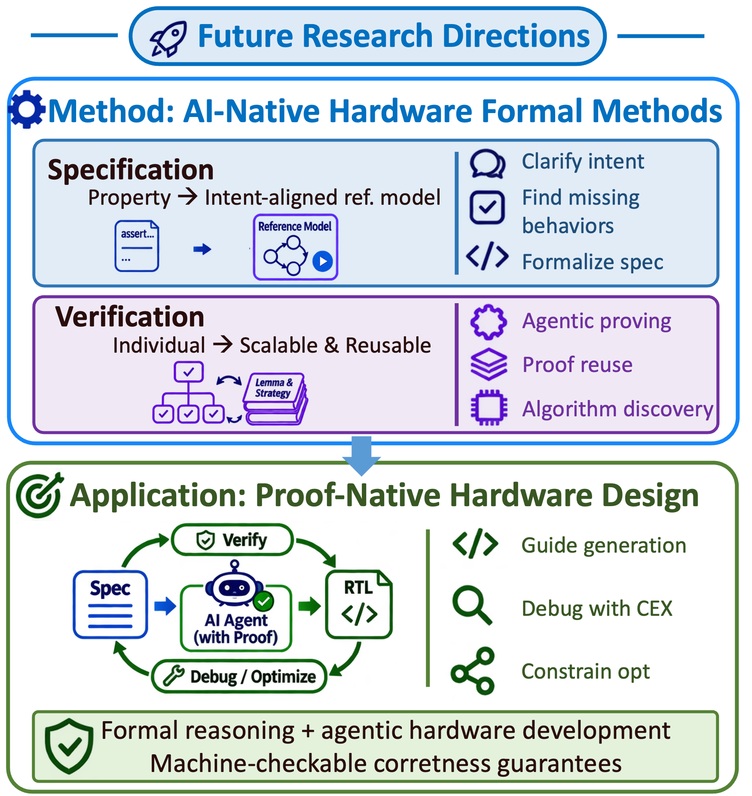

Survey that reviews the authors' Lean-based hardware verification work: Rtl2lean translates RTL into Lean models, and CircuitProver is an agentic Lean 4 prover.
Abstract
As AI agents become increasingly capable of generating and optimizing hardware circuits, ensuring the correctness of AI-generated designs becomes more important. Meanwhile, advances in AI lower the barriers to developing and applying formal methods, creating new opportunities to automate and improve hardware verification. This invited paper presents an overview of the methodologies and applications of hardware formal methods in the AI era. First, we examine how agentic AI advances hardware formal methods across three levels: specification, proof construction, and reasoning engines. Second, we discuss how formal methods support reliable AI-driven hardware development through RTL generation, debugging, and correctness-preserving optimization. We review representative research alongside our recent contributions, highlighting key technical advances and insights from experimental results. Finally, we discuss future research opportunities toward proof-native hardware development, where formal reasoning could become an integral part of autonomous hardware design.
Problem
AI agents increasingly generate and optimize hardware circuits, which raises the need to guarantee that the resulting designs are correct. At the same time, AI may lower the expertise barrier to applying formal methods.
Approach
An invited overview of hardware formal methods in the AI era. Part I covers how agentic AI advances formal methods at three levels: specification, proof construction (model checking and theorem proving, including Lean-based tools such as Rtl2lean and CircuitProver), and reasoning engines. Part II covers how formal methods support AI-driven RTL generation, debugging, and correctness-preserving optimization. Representative work and the authors' own contributions are summarized in taxonomy tables.

Figure 2. Overview of our taxonomy of hardware formal verification methodology and application.

Figure 3. Three levels of agentic AI for hardware formal methods. AI supports specification generation and intent clarification, guides task-specific proof construction through model checking and theorem proving, and improves reusable reasoning algorithms through agentic discovery.
Results
The survey catalogs representative systems and insights from their experiments. It proposes future directions toward intent-aligned reference models, scalable AI-native proof construction, and proof-native hardware development.

Figure 8. Future research directions toward scalable AI-native formal methods and proof-native hardware development.